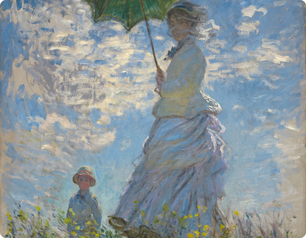
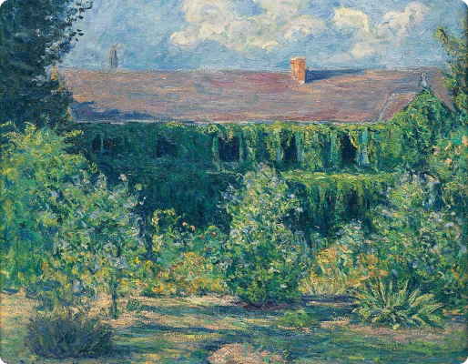
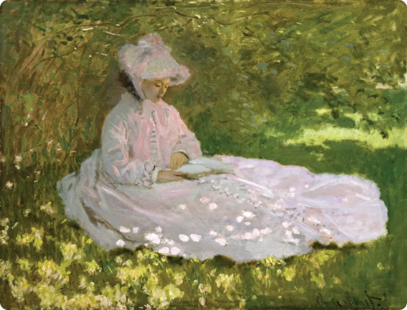

Testimonial
Monet's water lilies aren't just paintings, they're sun-kissed portals. I melt into their warmth, feeling the breeze stir on my skin.

Testimonial
His brushstrokes whisper secrets. Joy shimmers in sunlit gardens, mist weeps in stormy skies. Monet paints souls, not just landscapes.

Testimonial
Light dances on Monet's canvas, a vibrant tango. It sets leaves ablaze, sculpts shadows, ignites the very air. I'm mesmerized.

Testimonial
Monet shattered art's rigid mold. His light-drenched brushstrokes redefined seeing, paving the way for generations to chase new visions.
Testimonial
Stepping into a Monet is like diving into a dream. Colors waltz, brushstrokes sing, and my eyes drown in vibrant bliss.
Testimonial
Monet's poppies aren't flowers, they're fireworks. Each stroke explodes, scarlet passion against emerald calm. A riot for the senses.
Testimonial
His gaze unflinching, Monet captures the soul of a fleeting moment. Sun-dappled ponds, windswept cliffs - each holds a whispered story.